Atualmente, no jujutsu shenanigns, possuem 16 personagens, serão listados abaixo: seus nomes, habilidades e passivas individuais. Entre os personagens há um divisão entre aqueles que estão completos (base + awakening), os de early access(pagos) e o Base Only (não possui awakening mas possuiem um ultimate).
Personagens
Personagens completos
Honored One
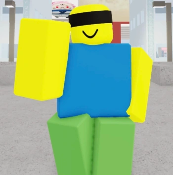
Comestic
O Honored One possui como cosmetico o "Infinity", uma animação unico para seu bloqueio

Moveset Base
Lapse Blue
Reversal Red
Rapid Punches
Twofold Kick
Limitless - habilidade especial
Moveset Awakening
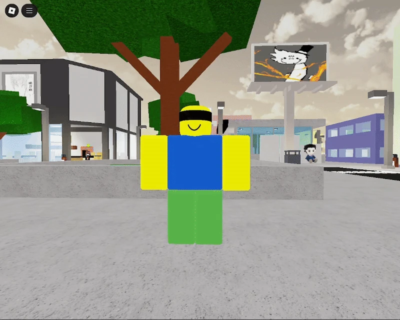
Lapse Blue MAX
Reversal Red MAX
Hollow Purple
Infinite Void
Variantes - Base
Lapse Blue + Limitless
Reversal Red + Limitless
Lapse Blue MAX finisher + Reversal Red MAX
Vessel
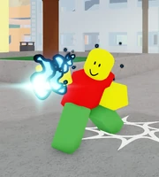
Comestic
O Vessel não possui um cosmetico único.
Moveset Base
Cursed Strikes
Crushing Blow
Divergent Fist
Manji Kick
Combat Instincts - Habilidade especial
Moveset Awakening
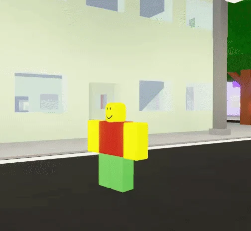
Dismantle
Open
Rush
Malevolent Shrine
Cleave - Habilidade especial
Variantes - Base
quaisquer habilidade base + Combat Instincts
Variantes - Awakening
Dismantle + Rush + Open + Cleave
Restless Gambler
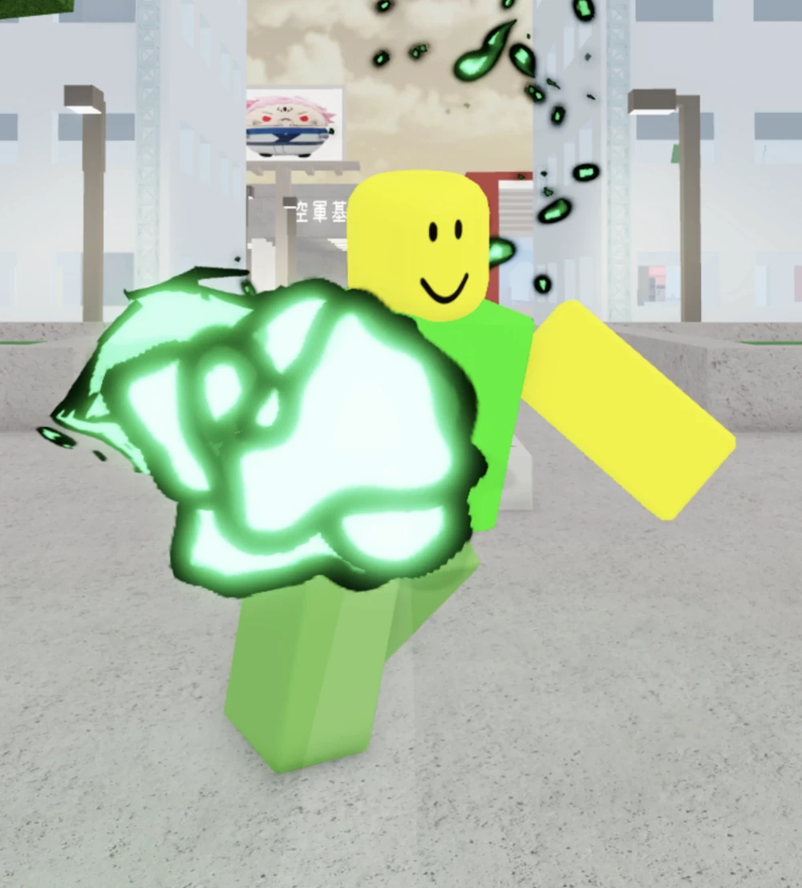
Comestic
O Restless Gambler não possui um cosmetico único.
Moveset Base
Reserve Balls
Shutter Doors
Rough Energy
Fever Breaker
Door Guard - Habilidade especial
Moveset Awakening

Lucky Volley
Lucky Rushdown
Overwhelming Luck
Energy Surge
Rhythm - Habilidade especial
Ten Shadows
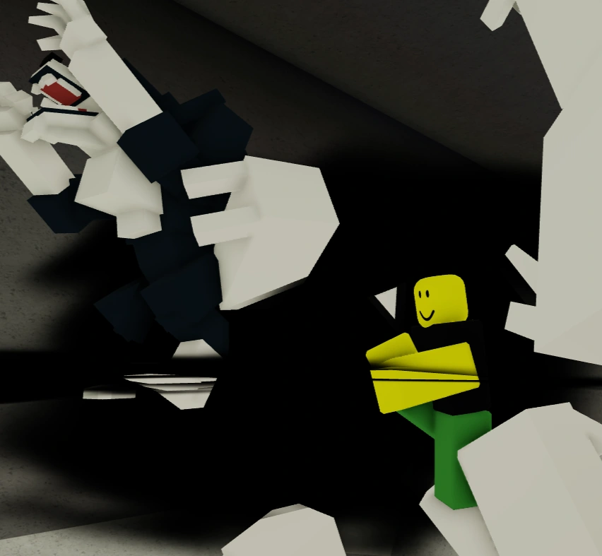
Comestic
O Ten Shadows não possui um cosmetico único.
Moveset Base
Rabbit Escape
Nue
Toad
Divine Dog: Totality
Lurking Shadow
Moveset Awakening
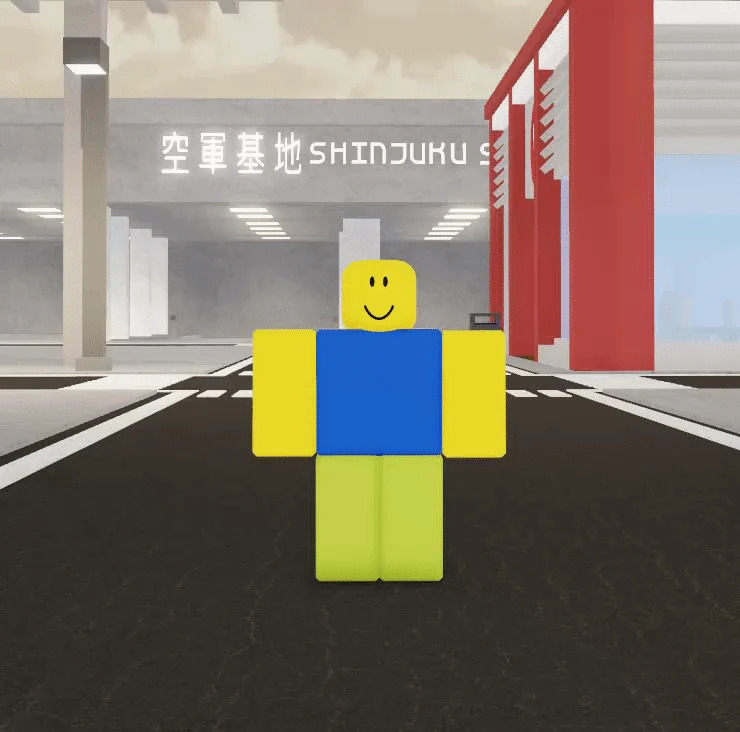
Max Elephant
Great Serpent
Shadow Swarm
Mahoraga
Lurking Shadow - habilidade especial
Switch - habilidade especial
Chimera Shadow Garden - habilidade condicional
Moveset Awakening Especial
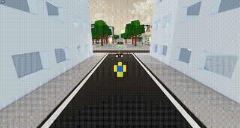
Mahoraga
Divine Pummel
Ground Pitch
Earthquake
Takedown / Adaptation / World Slash
Adaptation Wheel
Perfection
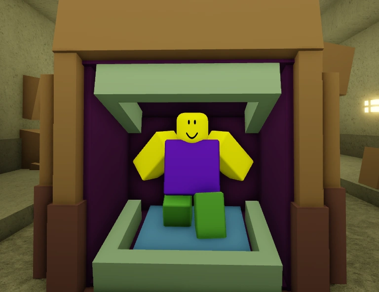
Comestic
O Perfection não possui um cosmetico único.
Moveset Base
Stockpile
Soul Fire
Focus Strike
Body Repel
Self-Transfiguration - Habilidade especial
Moveset Awakening

Idle Transfiguration
Body Disfigure
Spike Wrath
Embodiment of Self Perfection
Self-Transfiguration - Habilidade especial
Awakening Black Flash - Segundo awakening
Moveset Awakening Especial

Widespread Strikes
Face Blitz
Crushing Rushdown
Head Splitter
Blood Manipulator
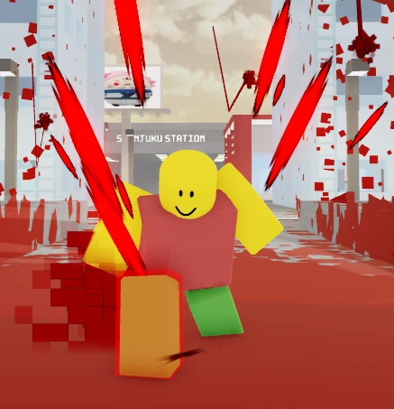
Comestic
O Blood Manipulator não possui um cosmetico único.
Moveset Base
Piercing Blood
Flowing Red Scale
Supernova
Blood Edge
Convergence - Habilidade especial
Moveset Awakening
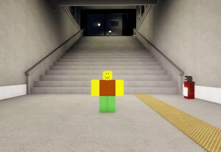
Slicing Exorcism
Wing King
Blood Rain
Plasma Wave
Convergence - Habilidade especial
Switcher
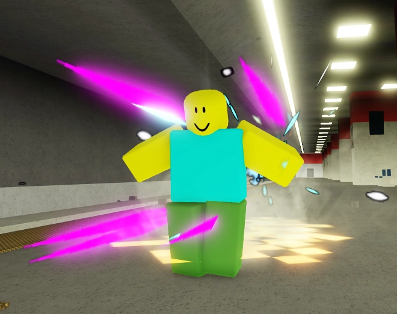
Comestic
O Switcher não possui um cosmetico único.
Moveset Base
Swift Kick
Brute Force
Pebble Throw
Elbow Drop
Boogie Woogie - Habilidade especial
Moveset Awakening
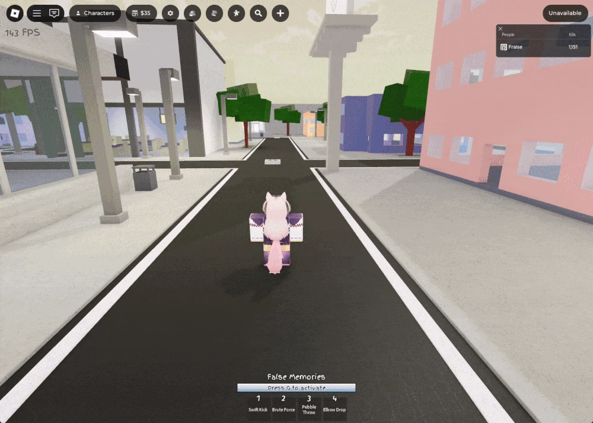
Idol's Debut
Climax Jumping
Dreams
Brothers
Boogie Woogie
Defense Attorney
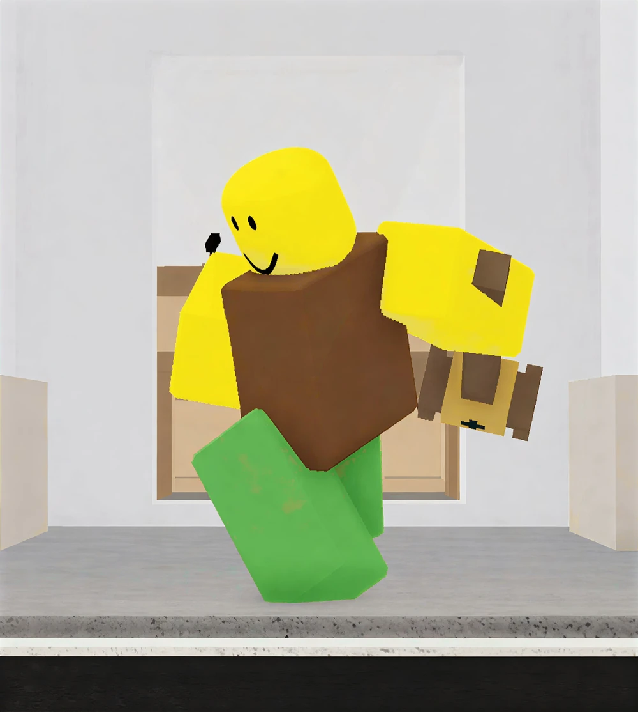
Comestic
O Defense Attorney possui um martelo como coméstico
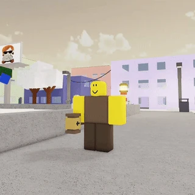
Moveset Base
Extended Swings
Justice Served
Judgement's Reach
Pressing Charges
No Escape - Habilidade especial
Moveset Awakening

Execution
Final Judgement
Verdict
Triple Sentence
Domain Amplification - Habilidade especial
Cursed Partners
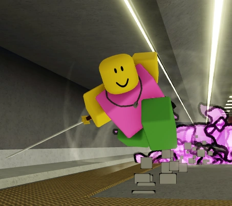
Comestic
O Cursed Partners possui um katana como cosmético.

Moveset Base
Severing Path
Resolute Slash
Outburst
Second Wind
Moveset base - especial
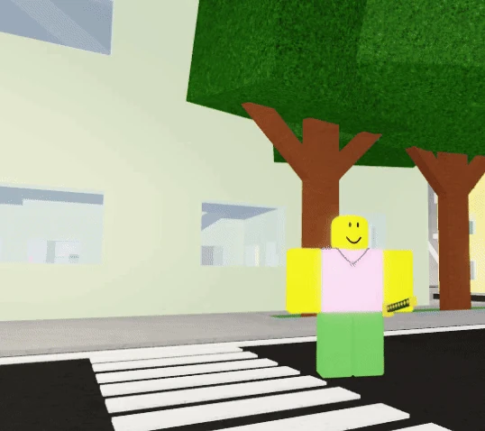
Rika
Rika Smash
Rika Launch
Rika Haymaker
Moveset Awakening
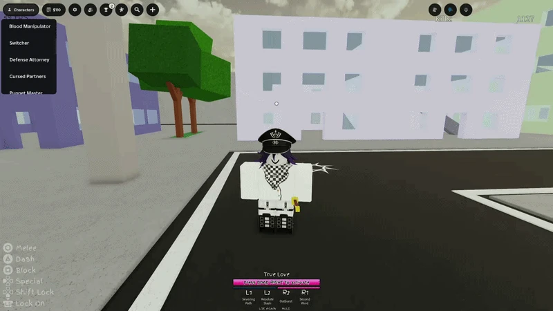
Comestic
Durante o Awakening o Cursed Partners possui um braço de metal
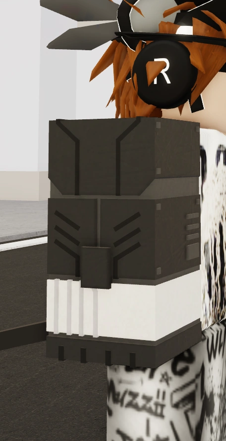
Elbow Rush
Copy
Energy Ripple
Authentic Mutual Love
Moveset awakening - especial
Rika
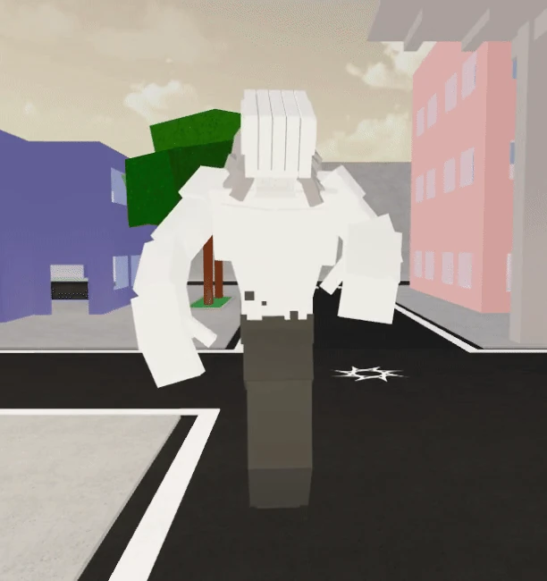
(R + 1) Rika Downslam
(R + 2) Rika Slam
(R + 3) True Love Beam
(R + 4) Rika Throw
(G) Copy Wheel
Puppet Master
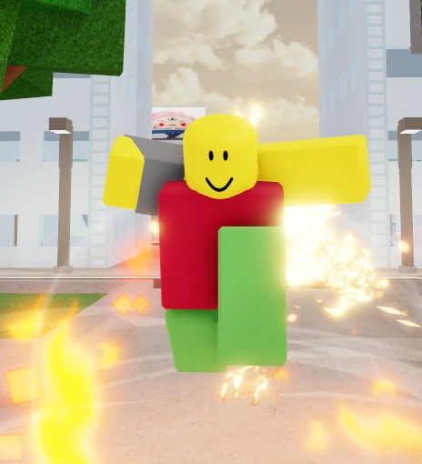
Comestic
O Puppet Master possui uma proteção metálica em seu antebraço
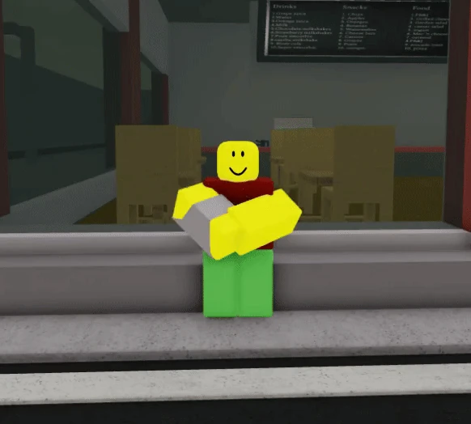
Moveset Base
Ultra Spin
Boost On
Ultra Cannon
Heat Emission
Offload - habilidade especial
Moveset Awakening
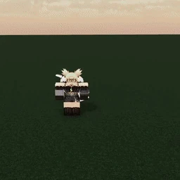
Miracle Cannon
Pigeon Viola
Absolute Destruction
Technique Charge
Energy Output
Head of the Hei
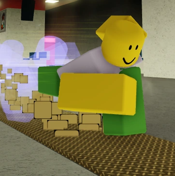
Comestic
O Head of the Hei não possui um cosmetico único.
Moveset Base
Projection Breaker
Bleedout
Decisive Strike
Cursory Impact
Projection Sorcery - Habilidade especial
Moveset Awakening
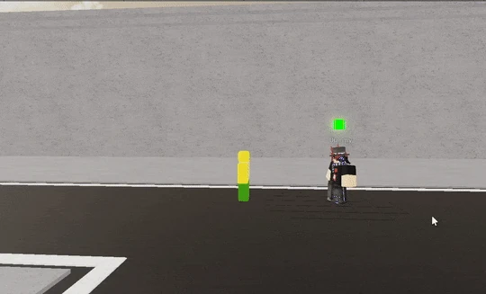
Top Speed
Flash Freezing
Tendril Grab
Time Cell Moon Palace
Acceleration - habilidade especial
Salaryman
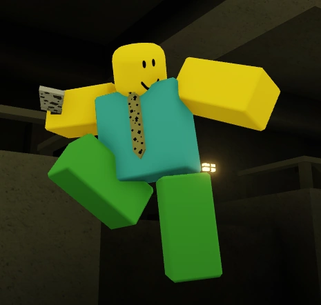
Comestic
O Salaryman possui um um cutelo com a lâmina envolta em um tecido branco com bolinhas pretas, além de usar uma gravata amarela com bolinhas pretas.
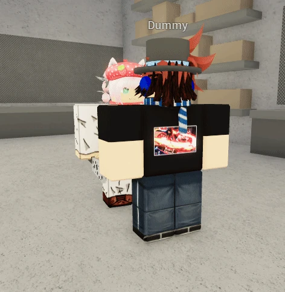
Moveset Base
Cleaving Whirlwind
Severance Kick
Blunt Cut
Stabilize
Ratio Point - Habilidade especial
Moveset Awakening
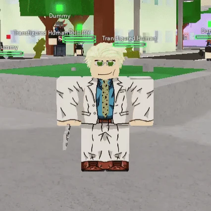
Comestic
Durante o Awakening o Salaryman ao bloquear, o usuário se abstém de usar sua ferramenta amaldiçoada para se defender, permanecendo totalmente vulnerável.

Ratio Breaker
Sharpen
Interrogate
Collapse
Ratio Point - Habilidade especial
True Cannon
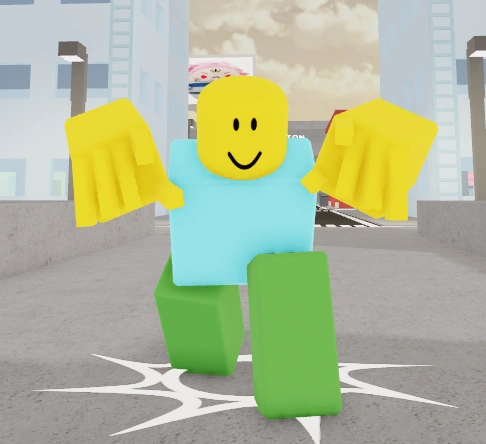
Comestic
O True Cannon não possui um cosmetico único.
Moveset Base
Granite Blast
Unsatisfied
Second Helping
Appetizer
Restyle - habilidade especial
Moveset Awakening

"What are you after?"
"I had no idea.."
"This is what dessert is like!"
"You weren't invited."
Restyle - habilidade especial
Personagens de early access
Disaster Plants
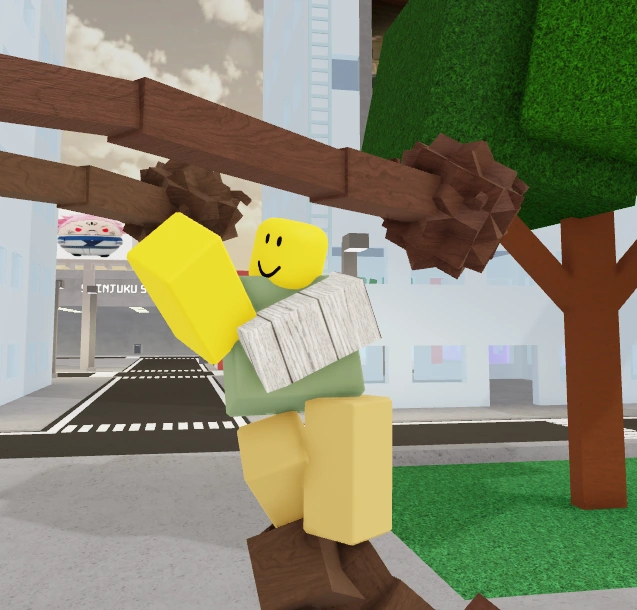
Comestic/passiva
O Disaster Plants possui um braço esquerdo envolto em tecido branco, forçando-o a depender exclusivamente do direito para atacar. Isso limita sua capacidade de ataque, visto que ele só pode executar um único ataque M1.
Moveset Base
Root Swam
Surging Thorns
Bud Shot
Defense Response
Flower Field - habilidade especial
Moveset Awakening
Ainda não possui moveset e nem awakening
Locust Guy
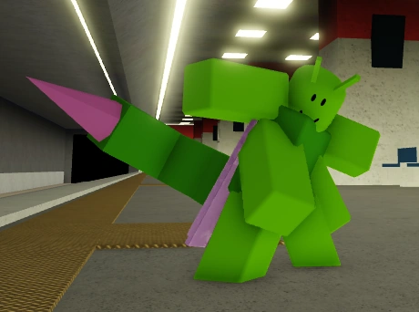
Comestic
O Disaster Plants não possui um cosmetico único.
Moveset Base
Clever
Black Mucus
Crushing Jaws
Wing Throw
Fluttering Pounce - habilidade especial
Ultimate
Directed Poison
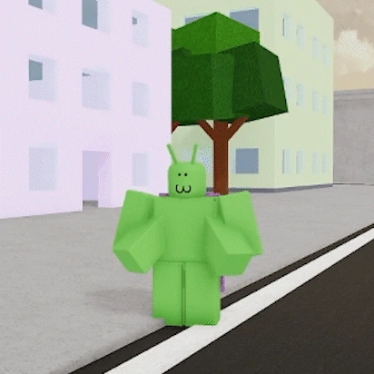
Personagens Base-Early
Star Rage
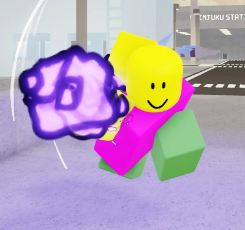
Comestic
O Star Rage possui o garuda como cosmético
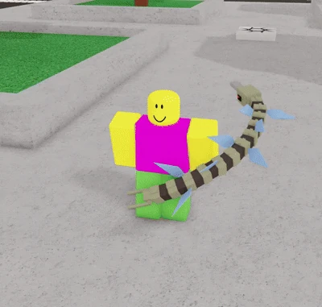
Moveset Base
Garuda Rebound
Rising Rage
Mass Breaker
Garuda Stab
Mass Buildup - habilidade especial
Ultimate
Unrestricted Density

Aspiring Mangaka
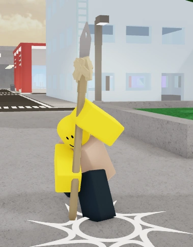
Comestic
O Aspirang Mangaka empunha um G-Warstaff. Tanto o rastro quanto a ponta começam brancos, mas vão ficando mais vermelhos com o sangue do inimigo conforme a Barra de Despertar do usuário se enche..

Moveset Base
Despair
Shut Up!
Eye Catching
Sacrilege
Clairvoyance - habilidade especial
Ultimate
Foresight

Foresight Espcial

Lucky Coward
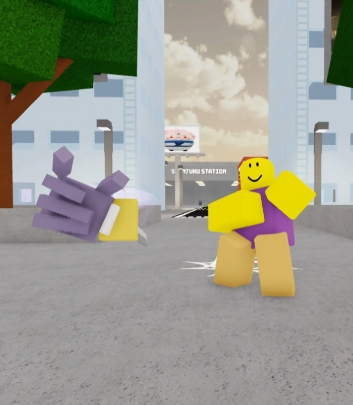
Comestic
O Lucky Coward possui uma espada com um empunhadura de mão.

Moveset Base
Ambush
Backstab
Trip
Cheap Shot
Helping Hand - habilidade especial
(R + 1) Ankle Cutter
(R + 2) High Time
(R + 4) Dirty Play
Ultimate
Jawbreaker

Crow Charmer
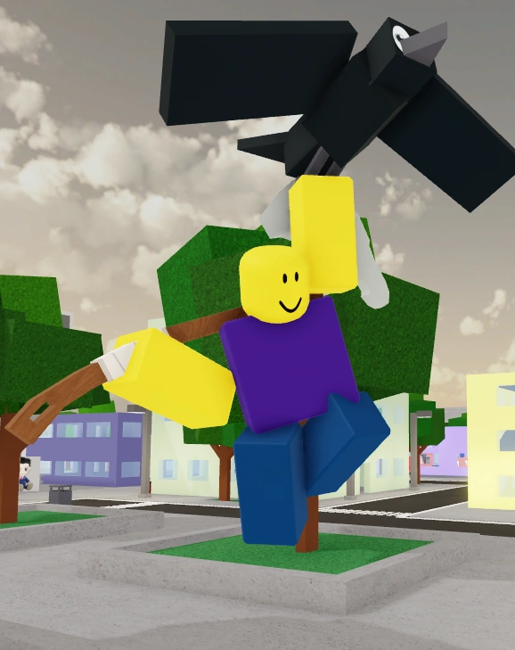
Comestic
O Lucky Coward não possui um cosmetico único.
Moveset Base
Impetus Updraft
Circling
Murmurate
Bird Control
Spatial Transference - habilidade especial
Ultimate
Bird Strike
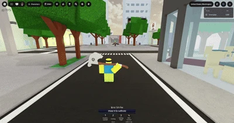
Black Death
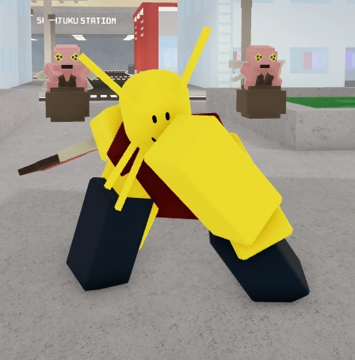
Comestic
O Lucky Coward não possui um cosmetico único.
Moveset Base
Festering Strikes
Detach
Chokehold
Roach Swarm
Earthen Insect Trance - habilidade especial
Ultimate
(G + R) Bugnado

Partenogênese

(G na borda de um dominio) Infestation
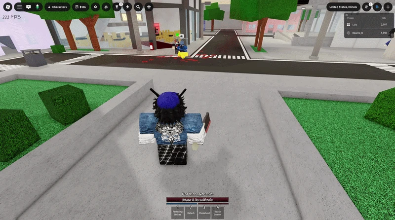